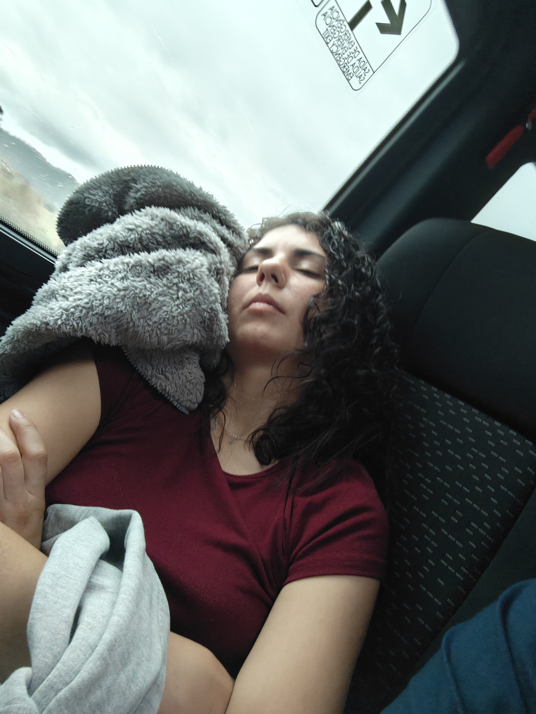
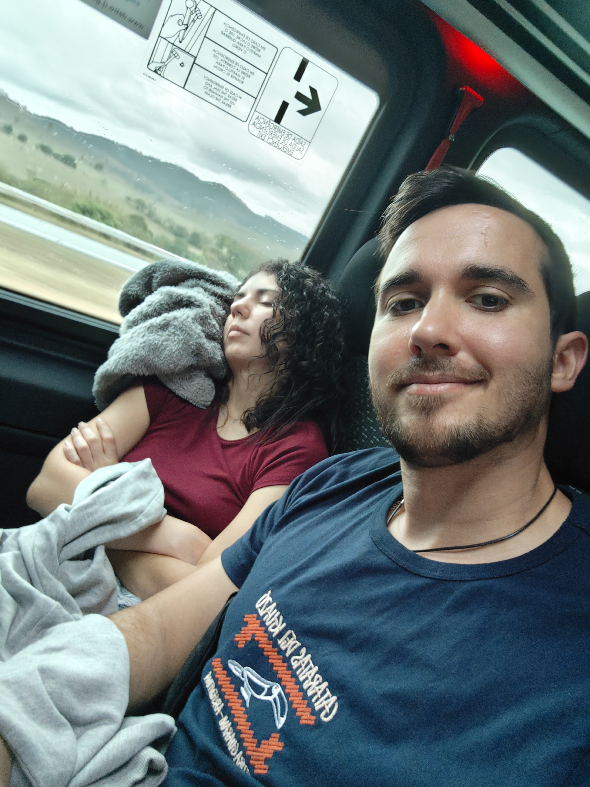
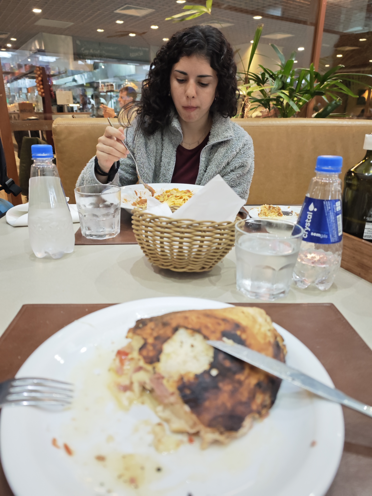

Este día nos volvíamos. Desayunamos y María se pidió otra vez huevos fritos con bacon, y yo otra tostada con huevo pochado. Esta vez tenía más pesto y se me iba a repetir un poco durante el viaje. Fue un desayuno nostálgico, sabiendo que era el último en Paraty, el último en Brasil.
🥞 Desayuno Final en Paraty
🚐 Viaje Caótico Hacia São Paulo
Nos vino a buscar una furgoneta. Como casi todo el viaje, éramos los primeros en ser recogidos. Después recogimos a todos los demás de otros hoteles y salimos camino al aeropuerto de São Paulo. El viaje fue bastante movidito: el conductor no frenaba en las curvas. Nos mareamos bastante. María se tomó una biodramina. En una parada que hizo, me la tomé yo también.
🚐 Conductor Agresivo en Carretera
El viaje hacia São Paulo fue un recordatorio de que los conductores brasileños tienen un estilo... único. Sin frenos en curvas, acelerones constantes, y una velocidad que te hace apreciar la gravedad de manera diferente. La biodramina fue nuestra mejor amiga en ese momento.



🍕 Tiempo de Espera en São Paulo
Llegamos al aeropuerto con 4 horas y 30 minutos de antelación. Comimos en un restaurante con muy buena pinta donde me pedí una pizza calzone y María unos tagliatelle boloñesa. La comida fue nuestra última parada antes del viaje de vuelta. Después fuimos a esperar a coger el avión.
🍕 Última Comida en Brasil
Ubicación: Aeropuerto de São Paulo
Plato de Cristian: Pizza calzone
Plato de María: Tagliatelle boloñesa
Veredicto: Comida de despedida de Brasil


😴 Las 10 Horas de Vuelo
En el vuelo de vuelta estuvimos durmiendo y viendo películas durante las 10 horas de trayecto. El tiempo pasó entre descansos y entretenimiento, con la anticipación de llegar a casa. Llegamos a Barcelona a las 9:30 de la mañana.
🏠 De Vuelta a Casa
Mi padre nos vino a buscar a las 10:30. Se equivocó de donde buscarnos, como le pasa siempre, y tuvimos que ir con las maletas hasta donde él estaba. Fue un final apropiado: después de 19 días en Argentina y Brasil, volvíamos a la realidad, a nuestro padre con su GPS desconfiable, a Barcelona, a casa.
🏠 Los Pequeños Detalles de Casa
El GPS fallando, el padre confundido, las maletas pesadas en el aeropuerto... Estos detalles aparentemente insignificantes son los que hacen que volver a casa sea real. No es glamoroso, pero es hogar.
"Un viaje no es solo los momentos mágicos: también es la comida que no sabías que estaba incluida, el
baño del barco, los monos a la hora del desayuno, el conductor que no frena en curvas, y finalmente, tu
padre confundido en el aparcamiento. Todo junto forma la historia completa." 🥰✈️🏠